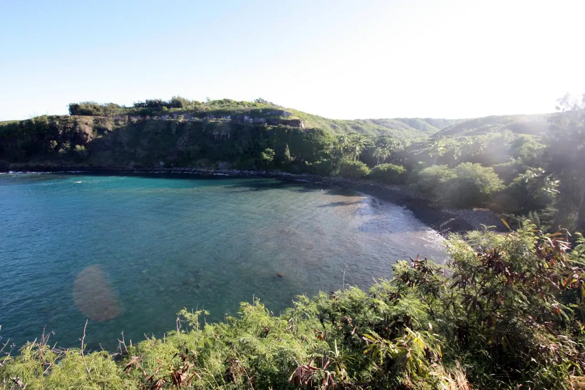

Honolua Bay
Maui, Hawaï, États-Unis · surf, snorkeling

Baie du nord-ouest de Maui, protégée en réserve marine. En hiver, une droite de récif puissante déroule sous la pointe et attire les surfeurs confirmés ; en été, la baie calme devient un spot de snorkeling réputé.
- Lieu
- Maui, Hawaï, États-Unis
- Niveau
- Variable selon les conditions
- Activités
- surf, snorkeling
- Type d'eau
- Mer / océan
- Coordonnées
- 21.01, -156.64 (position approximative du secteur)
Dangers à connaître
- Récif peu profond sous la vague de surf.
- Houle d’hiver : snorkeling dangereux, courants dans la baie.
- Eau trouble après la pluie à cause du ruisseau qui s’y jette.
Le conseil d'Ocean Buddy
Garde le surf pour les jours de houle d’hiver si tu as le niveau, et viens plutôt en été, mer plate, pour le snorkeling.
Ouvrir dans Ocean Buddy Télécharger sur l'App Store
Source : Fiche Ocean Buddy · septembre 2026 · à vérifier localement.